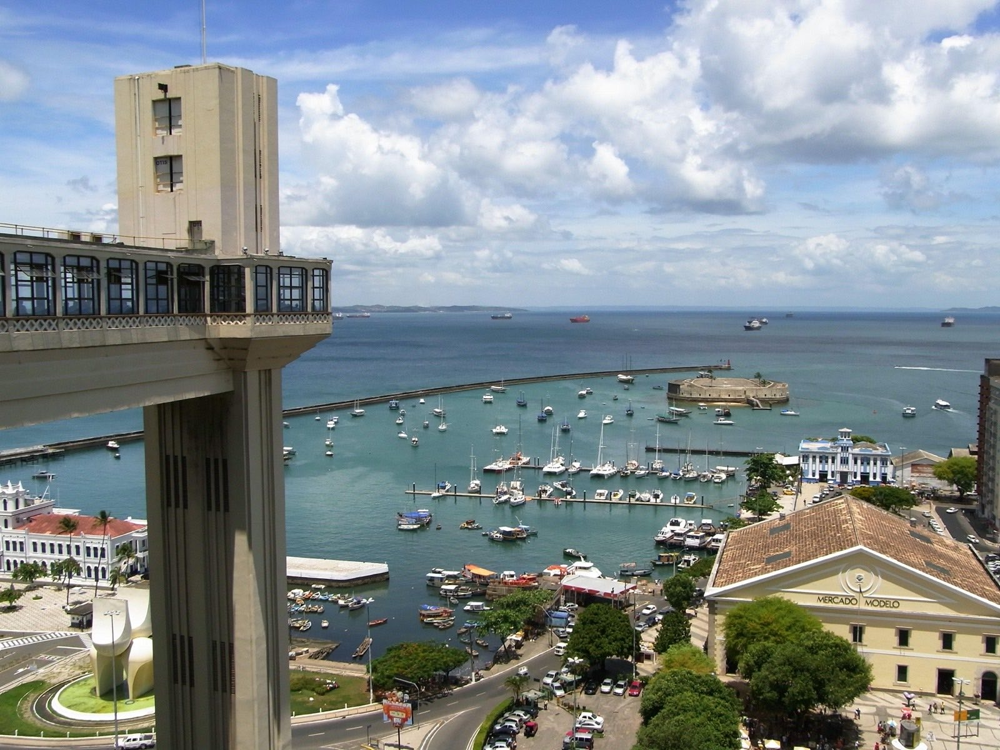
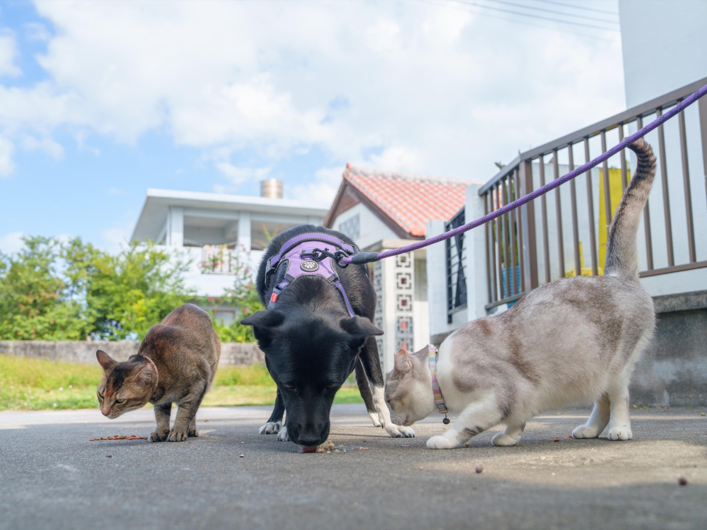
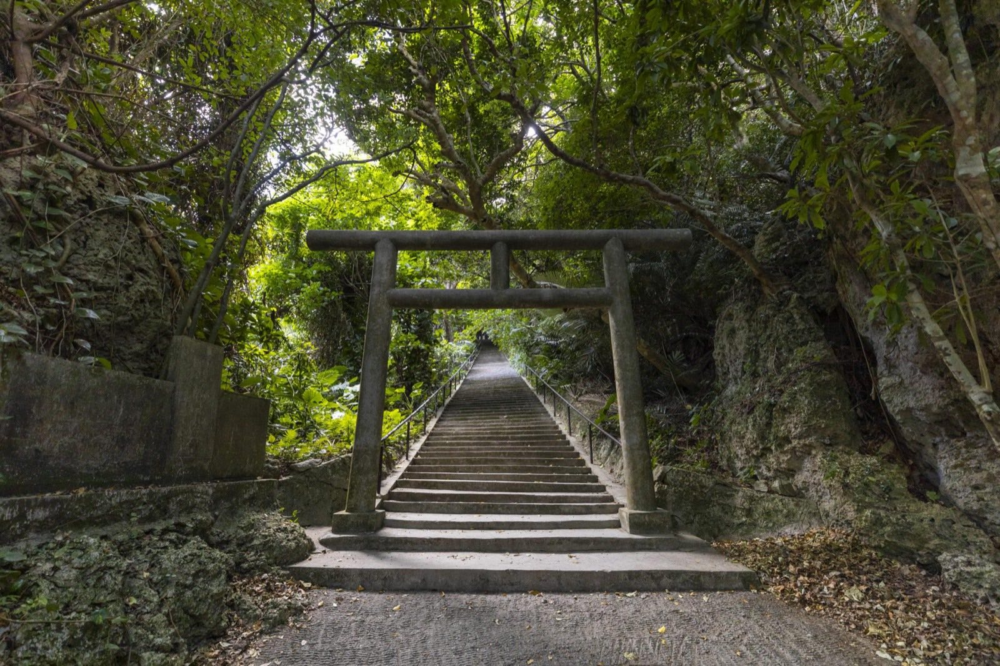
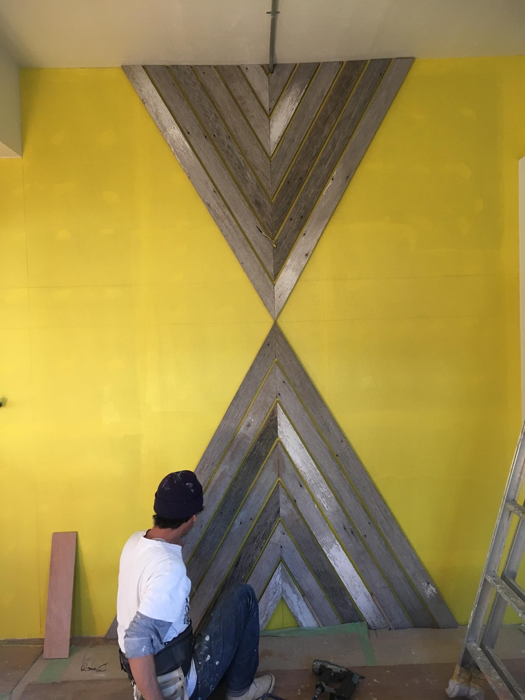

ストーリー
ブラジルの古都バイーア州サルバドール。私たち夫婦はこの地で出会い、幾多の縁が重なり、沖縄県・浜比嘉島へ繋がった物語。
行雲流水。流れに身を任せ、旅をするように暮らした。自然豊かな浜比嘉島は、世界を旅して辿り着いた理想郷だった。
出会い
Encounter
サンバ・レゲエが鳴り響く街
ー バイーア州の魅力に取り憑かれて ー
ブラジル東北部に位置するバイーア州。ブラジル最初の州都であり、400年以上の歴史を持つサルバドールは、旧市街地区が丸ごと世界遺産となっている古都。ポルトガル植民地時代の西洋文化と、アフリカから奴隷として連れてこられた人々のアフロ文化が色濃く混じる、エネルギッシュな街。
当時の私たち夫婦はそれぞれに、アフロブラジリアン文化に魅了され、まるで導かれるようにこの街を訪ねた。そして私たちは同じゲストハウス『青い宿』におり、カーニバル期間の前後2週間の間、それぞれの旅で滞在していた。
ある日ゲストハウス『青い宿』の共同キッチンで、偶然にも昼食をつくる時間が重なった時に、地元の話になり、驚くほどお互いの実家が近い距離に位置することがわかった。『じゃあ地元に戻ったときも遊ぼうよ。』となってから、今では子ども3人にも恵まれ、さらに犬1匹猫2匹と大家族になり、現在に至る。

いまも恋焦がれる街
ー カーニバルの熱気とともに ー
ブラジルでは毎年2月〜3月の時期になるとカーニバルが行われている。カトリックの四旬節（断食期間）の直前に開催される、南半球の夏の最大のお祭りである。世界中から人々が訪れ、ものすごい熱気と活気に満ち溢れている。
この時に体験したエネルギーが私たちの人生観を揺るがし、いまも憧れ恋焦がれる街である。子どもたちがもう少し大きくなったら、家族でブラジルに帰るのが今の夢です。

旅の先に見つけたもの
ー ブラジルが繋げてくれた沖縄 ー
2011年末、私たち夫婦は長期の海外旅に出た。オーストラリアでの滞在を最終目的に、東南アジアからインドへと旅を続けていたが、インド北部リシケシュに滞在する中で、この旅に違和感を覚えるようになった。ついには予定をすべて白紙にして衝動的に向かった3度目のブラジル旅の結果、資金はほぼ尽き、2012年春、早々に日本へ戻る選択を迫られた。
しかし日常に戻る気にはなれず、旅を続けながら住み込みで働ける仕事を求めて沖縄へ向かった。沖縄に滞在する中で、滞在していたゲストハウスが所有するキッチンカーを使っていいとオーナーから許可を得て、ブラジルの軽食を販売する機会を得る。その活動を通して出会った人との縁がきっかけとなり、私たちは流れに身をまかせ、沖縄に移住することを決めた。
ISLAND RESORT 76 ができるまで
Our Journey
島暮らしの始まり 出会いと別れ
ー 旅人の集まる家と料理の修行 ー
沖縄で最初に住み始めた、うるま市の勝連半島にあるアパートの窓から、海中道路と橋でつながる島々が見えていました。休みの日に訪ねた浜比嘉島の兼久集落にある一軒家にご縁をいただき、住むことができました。
沖縄移住のきっかけとなった方が料理人であったこともあり、主人は料理の道を歩み始め、昼夜働き詰めに。その傍ら、浜比嘉の家には増築された2階のお部屋もあり、知人を介し、浜比嘉島を訪ねる客人が年中訪ねるようになっていました。
旅をする中でも宿をすることが二人の夢でもあった中、島暮らしの中での出会いが今のISLAND RESORT 76へと繋がっていくとは、当時は思いもよりませんでした。

はじまり 比嘉から浜へ
ー かっこいい × 心地よさ ー
比嘉集落の借家を数年以内に出るように言われてから、探し求めた住まい。浜比嘉島でなければ沖縄に住む意味はないとの思いから、島内での物件探しを始めた矢先、見つけたのが今のISLAND RESORT 76のお家でした。完全な二世帯の二階建て鉄筋コンクリートの建物。海からも近く、全てが用意されたような環境でした。
アンティーク材を取り扱う内装業者の方とも繋がり、オシャレでセンスに溢れるお部屋が完成しました。そのアートワークは、滞在される方の感性に心地良く響いています。
語り尽くせない、数々のご縁によって生まれたISLAND RESORT 76は、訪ねられた方々にとても喜んでいただいています。今も新旧の出会いから、新しいISLAND RESORT 76を更新しています。
そして、農業の道へ
To the Farm
浜比嘉ゆいファーム
ー 消費する生活から生産する人へ ー
コロナ禍の中、当たり前が当たり前でなくなった時代に、ほぼ100％消費しかしていない自分の生活に強い危機感を感じました。そこから本格的に農業を勉強したいと思い、有機JAS認定の有機農家の元で約2年の研修期間を経て、2025年に独立をいたしました。
ハウスと畑では、ミニトマト、ルッコラ、丸オクラ、スイートバジル、キャッサバ芋など、沖縄の気候に寄り添った野菜たちを、農薬・化学肥料を一切使わずに育てています（有機JAS基準）。収穫した野菜は、うるマルシェや地域の飲食店などへお届けしています。
ご予約・お問い合わせ
『何もしなくても、ただいる時間が豊かだと感じられる。』そんな体験を当宿で味わっていただけたら嬉しいです。ご不明な点は、メール（islandresort76@gmail.com）までお気軽にお問い合わせください。
宿の空き状況・ご予約（Airbnb）お問い合わせ：islandresort76@gmail.com